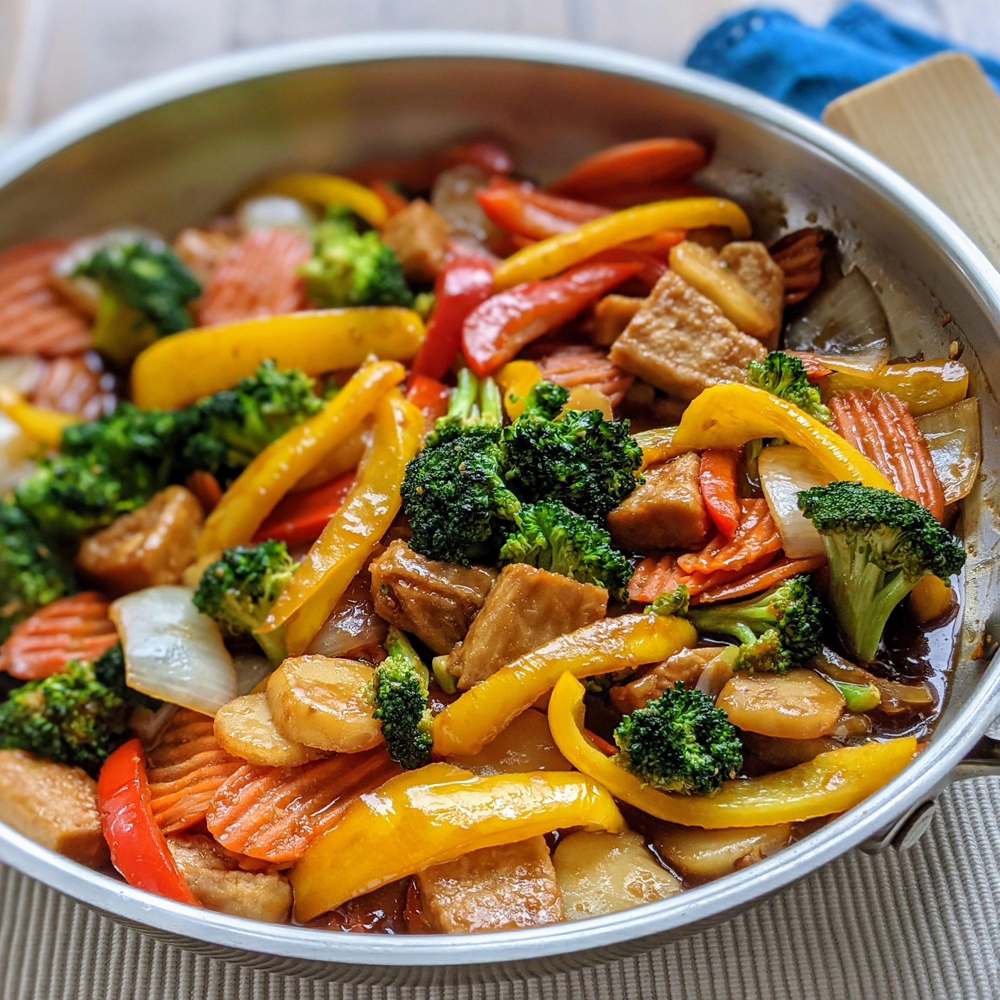

Chicken Stir Fry

Chicken Stir Fry That You Can Cook At Home
This chicken stir-fry is the answer to a speedy dinner that's jam packed with flavor! It's got juicy chicken, loads of veggies, and the best savory-sweet sauce.
Ingredients
STIR FRY SAUCE
- 1/4 cup chicken broth
- 1/4 cup tamari soy sauce
- 1 tablespoon dry sherry
- 1 tablespoon honey
- 1 teaspoon sesame oil
- 1 teaspoon rice vinegar
- 1 tablespoon arrowroot poweder
CHICKEN STIR FRY
- 2 tablespoons avocado oil
- 1 pound boneless skinless chicken breast, cut into 1-inch pieces
- salt and pepper, to taste
- 1 red bell pepper, deseeded and chopped
- 1 small carrot, thinly sliced
- 2 cups broccoli florets, cut into bite-sized pieces
- 1 small yello onion, chopped
- 1 tablespoon finely grated fresh ginger
- 4 garlic cloves, minced
Steps
- In a small bowl, whisk together the chicken broth, soy sauce, dry sherry, honey, sesame oil, rice vinegar, and arrowroot powder. Set aside.
- In a large skillet or wok on medium high heat, add 1 tablespoon of oil. Add the chicken in a flat layer. Season with salt and pepper, and cook until lightly browned, about 4-5 minutes, stirring as needed. Remove the chicken to a plate.
- Leaving any juices in the pan, add 1 tablespoon of oil along with the red bell pepper, onion, carrot, and broccoli. Cook the vegetables until tender, about 3-4 minutes.
- Add the chicken back to the pan with the minced ginger and garlic. Stir for 30 seconds. Pour in the sauce and stir fry for another 1-2 minutes, until the sauce thickens. Garnish with green onion and sesame seeds before serving.
Home